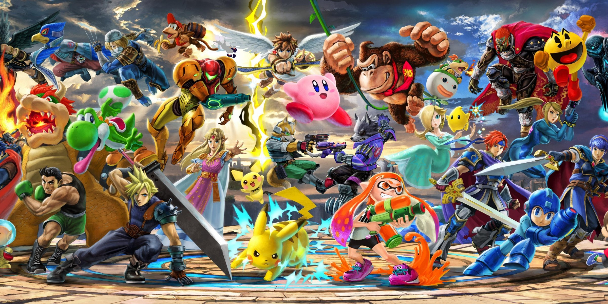

Introduction
Multiplayer is everywhere these days, finding a person who has't player Mario Kart, or Fortnite is almost impossible these days. Multiplayer revolutionised gaming when it was first introduced and I'm sure that it's going to carry on shaping the way we interact through video games.
I want to explore where multiplayer might takes us in the future, and I feel like the right place to start would be at the very beginning.
How did it start?
I've always thought of multiplayer as an integral part of gaming, but what I hadn't realised was just how prominent in the history of video games multiplayer was.
One of if not the first multiplayer video games to be created was Tennis for Two which came out in 1958 and was played by two people using custom made controllers. The coolest part about the game is that not only is it the first multiplayer game, it is also the first video game.

Introduction of Networking
While games always had a knack for bringing people together, it would all change with the introduction of internet. The limitation of having to be in the same room to play games disappeared, allowing for people countries, even oceans apart to play together as if they were sitting on the same couch.

Spectre is a computer game for the Apple Macintosh which came out in 1991. This was the first popular video-game with a LAN version. This game also popularised having the player's name above their character.
As time went on, multiplayer games became more and more popular, both the original Play Station and XBOX came with multiplayer support - The rest as they say, is history.
Where is multiplayer heading?
While knowing the origin of key aspects of video games is important, to appreciate the effort developers put into and the progress that has been made since. I feel like it's just as important to look forward and wonder what might come next.
As I was researching on new tech that was being developed for multiplayer, I came across Spatial OS which is a multiplayer solution made by Improbable. The reason that I think Spatial OS will change how we play together, and also the whole industry, is because of what Spatial OS can do - or rather what it can make your games do - which is to have multiplier lobbies with the player count in the hundreds of thousands.
To put that into perspective, Battlefield 1 which is one of the biggest AAA first person shooter is limited to a lobby of 64 players. The coolest thing is that there are already games made using Spacial OS.
Conclusion
We've all played a game with another person which shows just how integral multiplayer has become to video games. Multiplayer has been around for as long as video games themselves and it has come a long way since then, but I think that we've still only experienced a tip of the iceberg of all that multiplayer has to offer and I hope that more games take advantage of Spacial OS.